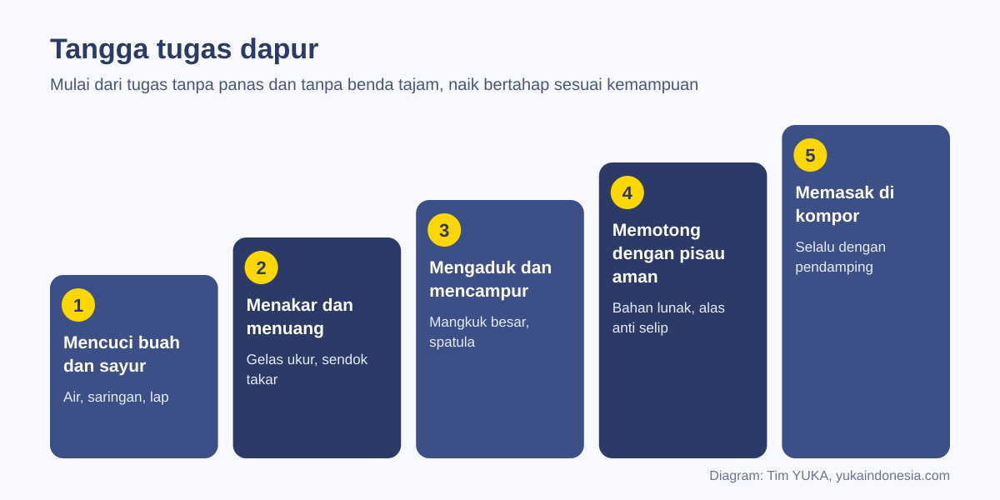
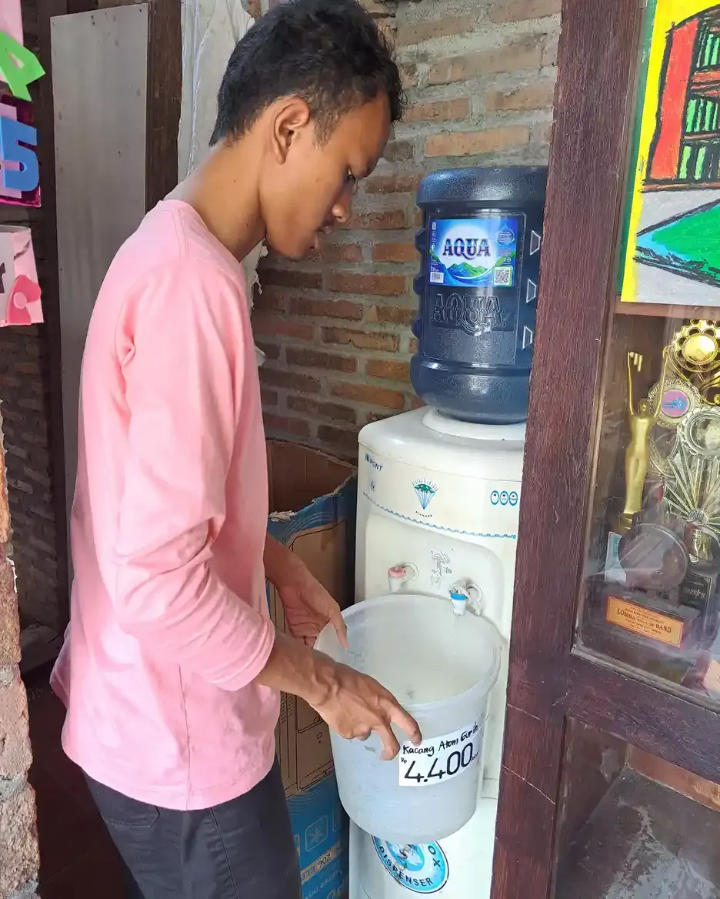
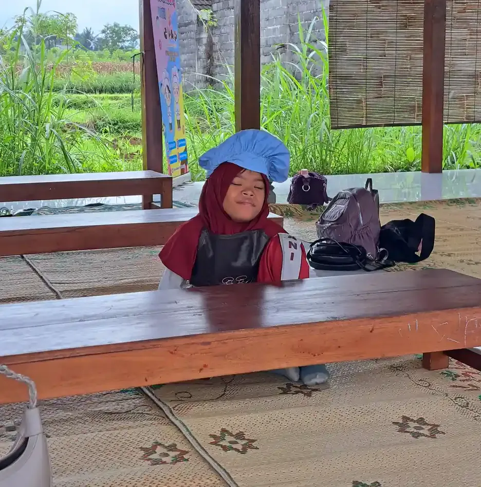

Belajar memasak untuk anak berkebutuhan khusus adalah latihan keterampilan hidup yang dilakukan bertahap, mulai dari mencuci bahan dan menakar, sampai memotong dan memasak dengan pendamping. Kegiatan ini melatih motorik, urutan langkah, komunikasi, dan kemandirian. Kuncinya resep bergambar, tugas sesuai kemampuan, dan aturan keamanan yang konsisten.
Dapur adalah ruang kelas yang sering terlupakan. Di sana anak belajar menghitung saat menakar, membaca urutan saat mengikuti resep, melatih jari saat mengupas, dan bersabar saat menunggu adonan matang. Bagi anak berkebutuhan khusus (ABK), memasak juga menjadi bekal kemandirian yang nyata: kelak ia bisa menyiapkan makanan sendiri.
Panduan ini melengkapi tulisan YUKA tentang program pemberdayaan anak berkebutuhan khusus. Isinya: manfaat memasak menurut riset, cara menilai kesiapan, tangga tugas dapur, alat bantu seperti resep bergambar dan video, aturan keamanan pangan, contoh kegiatan, serta penyesuaian untuk kebutuhan yang berbeda.
Penting sebelum membaca
Keamanan selalu nomor satu. Kompor, oven, pisau tajam, dan air panas hanya boleh dipakai dengan pendamping dewasa yang berada di samping anak. Perhatikan alergi makanan dan diet khusus anak sebelum memilih resep.
Daftar Isi
Manfaat Belajar Memasak bagi Anak Berkebutuhan Khusus
Memasak melatih banyak keterampilan sekaligus. Mengaduk, menuang, dan mengupas melatih motorik halus yang juga dibahas di artikel kegiatan motorik halus. Mengikuti resep melatih kemampuan mengurutkan langkah dan bertahan pada tugas. Memasak bersama melatih komunikasi, bergiliran, dan kerja sama.
Riset tentang tugas rumah tangga memberi gambaran yang menguatkan. Studi Amaral dan rekan (2014) pada 75 anak dan remaja menemukan bahwa anak dengan cerebral palsy dan Down syndrome aktif terlibat dalam tugas rawat diri dan tugas keluarga; disabilitas tidak menghalangi partisipasi mereka di rumah, walaupun tingkat bantuan yang dibutuhkan berbeda (Amaral dkk., 2014). Orang tua di semua kelompok juga menilai pentingnya keterlibatan anak di rumah sama tingginya.
Pada populasi anak secara umum, studi kohort White dan rekan (2019) terhadap 9.971 anak di Amerika Serikat menemukan bahwa anak yang rutin mengerjakan tugas rumah sejak TK cenderung menilai dirinya lebih kompeten secara sosial dan akademik serta lebih puas dengan hidupnya di kelas 3 (White dkk., 2019). Studi ini bersifat pengamatan pada anak umum, jadi tidak membuktikan sebab akibat, tetapi sejalan dengan pengalaman banyak guru: anak yang dipercaya mengerjakan sesuatu tumbuh lebih percaya diri.
Dalam jangka panjang, keterampilan dapur membuka pintu ke kemandirian dan pekerjaan. Kisah alumni yang membangun usaha dari dapur dapat dibaca di kisah Mas Ilham dan usaha telur asinnya.
Menilai Kesiapan dan Menentukan Tujuan
Tidak ada usia pasti untuk mulai. Anak prasekolah sudah bisa mencuci buah atau menyobek daun selada, sementara remaja bisa berlatih menyiapkan sarapan sendiri. Yang lebih penting adalah mengamati kemampuan saat ini dan menetapkan tujuan yang jelas, misalnya "membuat roti isi tanpa bantuan" atau "menakar beras dan air untuk menanak nasi dengan pendampingan".
Beberapa hal perlu diperhatikan sebelum mulai:
- Pemahaman bahaya. Apakah anak memahami kata "panas" dan "tajam", dan berhenti saat diminta?
- Kebutuhan sensorik. Sebagian anak tidak tahan tekstur lengket, bau tajam, atau suara blender. Pengalaman ini dibahas di artikel sensory over responsivity pada anak.
- Kemampuan motorik. Anak dengan kekuatan genggam terbatas mungkin butuh alat yang dimodifikasi. Terapis okupasi bisa membantu menilainya, seperti dijelaskan di terapi okupasi.
- Pola makan dan alergi. Anak dengan masalah makan atau diet khusus perlu resep yang disepakati keluarga; lihat juga gangguan makan anak ABK.
Tujuan memasak bisa dimasukkan ke dalam program pembelajaran individual di sekolah, sehingga latihan di rumah dan di sekolah saling menguatkan.
Tangga Tugas Dapur: Dari yang Paling Aman
Susun tugas dari yang tanpa panas dan tanpa benda tajam, lalu naik bertahap. Anak berpindah ke tugas berikutnya hanya bila tugas sebelumnya sudah dikerjakan dengan aman beberapa kali.

| Tingkat | Contoh tugas | Keterampilan yang dilatih | Pengawasan |
|---|---|---|---|
| 1. Tanpa alat berbahaya | Mencuci buah dan sayur, menyobek sayuran daun, mengelap meja | Koordinasi tangan, mengikuti instruksi | Diawasi dari dekat |
| 2. Menakar dan menuang | Menakar beras, menuang air ke gelas ukur, mengisi wadah air minum | Berhitung, ketelitian | Diawasi dari dekat |
| 3. Mencampur | Mengaduk adonan, mengocok telur, mengoles selai | Kekuatan dan kontrol gerak | Diawasi dari dekat |
| 4. Memotong | Memotong pisang atau tahu dengan pisau tumpul atau pisau khusus anak | Koordinasi dua tangan, keselamatan | Pendamping di samping |
| 5. Memakai panas | Menggoreng telur, merebus mi, memakai penanak nasi | Urutan langkah, waspada bahaya | Pendamping di samping, setiap saat |
Tidak semua anak harus mencapai tingkat lima. Anak yang mahir di tingkat dua dan tiga sudah bisa menyumbang banyak dalam kegiatan memasak keluarga, dan itu tetap pencapaian.
Alat Bantu: Resep Bergambar, Video, dan Peralatan
Resep tertulis biasa sering terlalu padat. Ubah resep menjadi langkah bergambar: satu foto atau gambar per langkah, kalimat pendek, dan kotak centang. Cara menyusunnya mirip dengan jadwal visual untuk anak autis: urutan jelas dari kiri ke kanan atau atas ke bawah.
Video juga membantu. Meta-analisis Hong dan rekan (2016) atas studi kasus tunggal menemukan video modeling secara keseluruhan cukup efektif untuk mengajarkan keterampilan hidup fungsional pada individu autis (Hong dkk., 2016). Rekam sendiri langkah memasak dengan ponsel, dari sudut pandang tangan, agar anak melihat persis gerakan yang harus ditiru.
Peralatan bisa disesuaikan:
- Mangkuk dengan alas anti selip atau kain basah di bawahnya agar tidak bergeser.
- Sendok dan spatula bergagang tebal untuk anak dengan genggaman lemah.
- Gelas ukur berwarna atau ditandai garis agar mudah dibaca.
- Pengatur waktu dengan tampilan visual untuk menunggu proses matang.
- Celemek dan topi yang membantu anak "masuk ke peran" juru masak.

Aturan Keamanan dan Kebersihan Pangan
Keamanan diajarkan sebagai bagian dari kegiatan, bukan larangan yang diteriakkan saat bahaya. Buat aturan dapur yang singkat dan bergambar, lalu tempel di dinding. Contohnya: cuci tangan dulu, pisau selalu menghadap ke bawah, gagang panci tidak menjorok ke luar meja, dan kompor hanya dinyalakan orang dewasa atau bersama orang dewasa.
Untuk kebersihan pangan, WHO merangkum pesan inti dalam Five Keys to Safer Food: jaga kebersihan, pisahkan bahan mentah dan matang, masak sampai matang, simpan makanan pada suhu aman, serta gunakan air dan bahan baku yang aman. Kelima pesan ini bisa diubah menjadi lima kartu bergambar yang dibahas sebelum memasak.
| Pesan WHO | Contoh kebiasaan untuk anak |
|---|---|
| Jaga kebersihan | Cuci tangan dengan sabun sebelum memasak dan setelah memegang telur mentah |
| Pisahkan mentah dan matang | Pakai talenan berwarna berbeda untuk bahan mentah dan buah siap makan |
| Masak sampai matang | Periksa bersama pendamping bahwa telur atau ayam sudah matang |
| Simpan pada suhu aman | Masukkan sisa makanan ke kulkas, jangan dibiarkan lama di meja |
| Air dan bahan yang aman | Pakai air minum yang layak dan cek bahan yang sudah rusak atau kedaluwarsa |
Siapkan juga rencana bila terjadi luka kecil atau luka bakar ringan, dan simpan kotak P3K di dekat dapur.
Contoh Kegiatan Memasak yang Cocok
Pilih menu yang langkahnya sedikit, hasilnya cepat terlihat, dan disukai anak. Beberapa contoh:
- Roti isi. Mengoles, menyusun, dan memotong menjadi segitiga dengan pisau tumpul.
- Salad buah. Mencuci, memotong buah lunak, mencampur, dan menata di mangkuk.
- Minuman sederhana. Menakar, menuang, dan mengaduk; cocok untuk melatih ketelitian takaran.
- Telur dadar. Memecah dan mengocok telur, lalu menggoreng bersama pendamping.
- Kue tanpa oven. Mencampur dan mencetak adonan, kegiatan yang menyenangkan untuk kelompok.
Di sekolah, kelas memasak bisa dijalankan dalam kelompok kecil dengan peran bergilir: satu menakar, satu mengaduk, satu menata. Pembagian peran seperti ini juga melatih kerja sama, sejalan dengan buddy system untuk anak ABK di sekolah. Hasil masakan bisa dinikmati bersama atau dikemas untuk keluarga, sehingga anak merasakan karyanya dihargai.

Penyesuaian untuk Kebutuhan yang Berbeda
Setiap anak membutuhkan penyesuaian yang berbeda. Beberapa contoh yang sering dipakai:
- Anak autis. Rutinitas yang sama setiap sesi, resep bergambar, peringatan sebelum ada suara keras seperti blender, dan sarung tangan bagi anak yang tidak nyaman dengan tekstur lengket.
- Anak dengan ADHD. Langkah pendek, tugas aktif seperti mengocok, dan pujian segera setelah satu langkah selesai.
- Anak dengan hambatan motorik. Meja dengan tinggi sesuai kursi roda, alat bergagang tebal, dan posisi duduk yang stabil. Saran terapis okupasi seperti di terapi okupasi untuk anak cerebral palsy sangat membantu.
- Anak dengan Down syndrome. Contoh langsung dan pengulangan, dengan tugas yang dipecah kecil. Gambaran umum kondisinya ada di artikel Down syndrome adalah.
Penyesuaian bukan berarti menurunkan harapan. Justru dengan penyesuaian yang tepat, anak bisa menunjukkan kemampuan yang selama ini tidak terlihat.
Dari Dapur Rumah ke Kemandirian dan Pekerjaan
Keterampilan memasak yang dilatih sejak kecil menjadi fondasi hidup mandiri saat dewasa: menyiapkan makanan sendiri, berbelanja bahan, dan mengatur uang belanja. Keterampilan mengatur uang dibahas lebih lanjut di money management untuk penyandang disabilitas.
Bagi sebagian remaja, dapur juga bisa menjadi jalan menuju pekerjaan atau usaha, misalnya membantu di usaha katering, membuat kue untuk dijual, atau mengemas makanan. Gagasan ini dibahas dalam kewirausahaan anak muda disabilitas dan pekerjaan yang cocok untuk orang autis.
Mulailah dari satu kegiatan kecil minggu ini. Biarkan anak mencuci buah untuk keluarga, lalu rayakan hasilnya. Langkah kecil yang konsisten lebih bermakna daripada kelas memasak besar yang hanya sekali.
Pendampingan di YUKA
Siswa Sekolah Inklusi Taruna Imani mengikuti kegiatan memasak bersama, dari menyiapkan alat sampai menikmati hasilnya bersama teman. Orang tua yang ingin berdiskusi tentang cara melatih keterampilan dapur dan kemandirian anak di rumah dapat menghubungi tim YUKA lewat WhatsApp.
Pertanyaan yang Sering Diajukan
Apa manfaat belajar memasak untuk anak berkebutuhan khusus?
Memasak melatih motorik halus, kemampuan mengurutkan langkah, berhitung saat menakar, komunikasi, kerja sama, dan kemandirian. Riset Amaral dan rekan (2014) menunjukkan anak dengan cerebral palsy dan Down syndrome aktif terlibat dalam tugas rumah tangga.
Pada usia berapa anak ABK bisa mulai belajar memasak?
Tidak ada usia pasti. Anak prasekolah sudah bisa mencuci buah atau menyobek sayuran, sedangkan remaja bisa berlatih menyiapkan sarapan. Mulailah dari tugas tanpa panas dan tanpa benda tajam sesuai kemampuan anak.
Tugas dapur apa yang paling aman untuk pemula?
Mencuci buah dan sayur, menyobek sayuran daun, mengelap meja, menakar beras, menuang air, dan mengaduk adonan. Tugas memotong dan memakai kompor diberikan belakangan dengan pendamping di samping anak.
Bagaimana cara mengajarkan resep kepada anak autis?
Ubah resep menjadi langkah bergambar dengan kalimat pendek dan kotak centang, jalankan rutinitas yang sama setiap sesi, dan pertimbangkan video singkat. Meta-analisis Hong dan rekan (2016) menemukan video modeling cukup efektif untuk keterampilan hidup fungsional.
Apa itu Five Keys to Safer Food dari WHO?
Lima pesan inti WHO untuk keamanan pangan: jaga kebersihan, pisahkan bahan mentah dan matang, masak sampai matang, simpan makanan pada suhu aman, serta gunakan air dan bahan baku yang aman.
Bagaimana jika anak tidak suka tekstur bahan makanan?
Hormati kepekaan sensoriknya. Tawarkan sarung tangan, mulai dari bahan yang kering, beri peringatan sebelum ada suara keras, dan jangan memaksa. Terapis okupasi bisa membantu menyusun langkah pengenalan bertahap.
Menu apa yang cocok untuk kegiatan memasak pertama?
Menu dengan sedikit langkah dan hasil cepat, seperti roti isi, salad buah, minuman sederhana, telur dadar dengan pendamping, atau kue tanpa oven.
Apakah keterampilan memasak bisa menjadi bekal pekerjaan?
Bisa. Keterampilan dapur menjadi dasar hidup mandiri dan dapat berkembang menjadi pekerjaan atau usaha, seperti membantu katering, membuat kue untuk dijual, atau mengemas makanan, dengan dukungan yang sesuai.
Bacaan Terkait
Bacaan lain tentang keterampilan hidup dan kemandirian:
Sumber dan Referensi
- Amaral MF dkk. Household task participation of children and adolescents with cerebral palsy, Down syndrome and typical development. Res Dev Disabil, 2014
- White EM, DeBoer MD, Scharf RJ. Associations Between Household Chores and Childhood Self-Competency. J Dev Behav Pediatr, 2019
- Hong ER dkk. The effects of video modeling in teaching functional living skills to persons with ASD: A meta-analysis of single-case studies. Res Dev Disabil, 2016
- World Health Organization. Five keys to safer food manual
Catatan: Artikel ini bersifat edukasi umum dan bukan pengganti saran psikolog, guru pendidikan khusus, dokter, atau tenaga profesional lain. Sumber diperiksa tim YUKA pada 5 Oktober 2026.